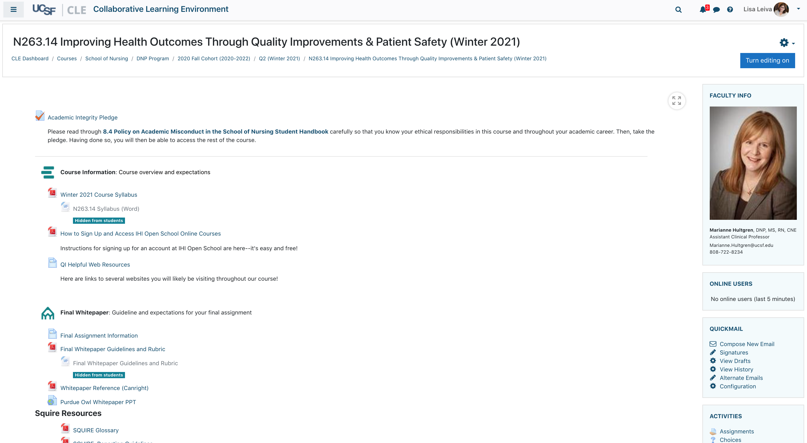

Collaborative Learning Environment
Powered by Moodle
Why?
Privacy
Predictable costs
Consistency with flexibility
Integrations
Open/service mission
Control over maintenance/updates

Rich Trott
Richard.Trott@ucsf.edu
Lisa Leiva
Instructional Designer
Jon Johnson
Software Engineering Lead
Brian Warling
Product Manager and Moodle SME